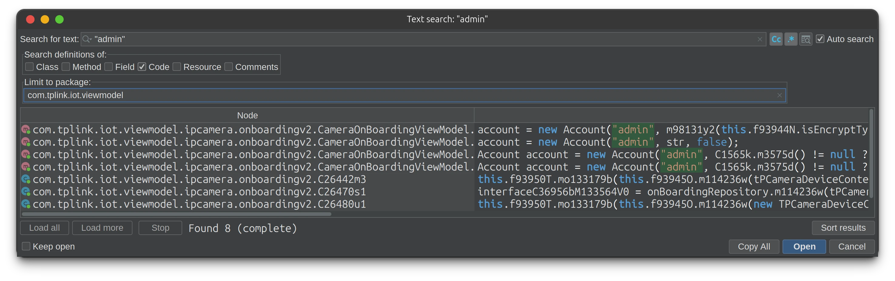

I recently bought a cheap Tapo indoor camera to see what my dog gets up to when I am out of the house.
What actually followed? I ended up reverse-engineering onboarding flows, decompiling an APK, MITMing TLS sessions, and writing cryptographic scripts.
My main motivation for this project really stemmed from the fact that the camera annoyed me from day one. Setting the camera up in frigate was quite painful, no one really seemed to know how these cameras worked online.
SIDENOTE: If you want 2 way audio to work in frigate you must use the
tapo://go2rtc configuration for your main stream instead of the usualrtsp://. TP-Link are lazy and only implement 2 way audio on their own proprietary API.
One undocumented behavior that tripped me up was that the device’s API is supposed to accept credentials admin:<your-tapo-cloud-password> after onboarding. However after banging my head against a wall for a few hours I later discovered that if you change your cloud password after onboarding, paired devices don’t get the memo 🙂.
This implied a few things to me that started the cogs turning:
- There must be a call made during on-boarding that syncs the device password with the cloud password
- The device must either allow unauthenticated calls before this step or have some sort of default password.
So considering my onboarding woes and the fact that I was starting to recoil every time the tapo app tried to jam a “Tapo Care” subscription down my throat, a cloudless onboarding solution for the device was beginning to look more and more desirable.
The first step to cracking this egg was to be be able to snoop on what the app and the camera are saying to each other during onboarding. E.g, establish a man in the middle.
Man in the middle
To man in the middle a phone app, you must be able to route all http(s) traffic via a proxy server you control. Historically this has been quite simple to achieve, simply spin up a proxy on a computer, add the proxy’s self-signed certificate to the phone’s truststore, and configure the phone to point at the proxy.
However, modern phone apps can use a few nasty tricks to render this approach ineffective. Namely they will blatantly ignore proxies, throw the system truststore to the wind and make liberal use of certificate pinning.
The most full-proof technique for generically MITMing an app has therefore become dynamic instrumentation via tools like frida. What this allows us to do is force an app to use the proxies and certificates that we tell it to whilst batting aside it’s attempts to do things like certificate pinning.
So the setup ended up looking like this (full setup guide here ):
---
config:
theme: 'base'
themeVariables:
primaryColor: '#00000000'
primaryTextColor: '#fff'
primaryBorderColor: '#ffffff8e'
lineColor: '#fff'
secondaryColor: '#fff'
tertiaryColor: '#fff'
---
sequenceDiagram
participant A as Tapo App <br>(with frida hooks)
participant L as Laptop <br>(mitmproxy)
participant C as Tapo Camera
A->>L: Request
L->>L: Record request
L->>C: Forward request
C-->>L: Response
L->>L: Record response
L-->>A: Forward response
After spinning up mitmproxy, injecting the frida scripts
, and onboarding the camera, we finally see an initial login flow — before the admin password ever gets changed:
However, subsequent requests look like this:
{
"method": "securePassthrough",
"params": {
"request": "bAhdgihJ9j6PrrknnbXWATBohGTZK5llv3MEzRcmoAmcxexmlVNz3OUX2r0h9a9EG/3X0tBpPi654T2+BjqVEOn2D178kokBpf8RQj01AvBZLYD5S5sFeaCXWiRXA7MgQUppROV4AbrU4f+GOM37KgPqT59qgLVja2slw6CzrKjPzOrG4Ho6Mu6wBa1xepcj"
}
}
And responses look like this:
{
"seq": 584,
"result": {
"response": "Gqz1wbXAig/3wL+kXzY2Ig3hq+JSYasYI7FXdMNZR5PyH8bpLX+GJqQbImUtby9IEj5HQDhxqcTa+dUqQjI0GaGCxuGHqmrgQ0FeyCTQjBiW5gslAPQG33wj44OOkAep"
},
"error_code": 0
}
So from this initial dive we have learned that:
- Tapo 100% has a default password due to the fact that it performs a full login before it knows anything about the cloud password.
- Tapo has an encrypted
securePassthroughchannel for its API calls to prevent peeping toms such as myself from spilling the beans.
The JADX dive
The next logical step is to decompile the apk in JADX and start rummaging around for a default password.
The initial login call that we captured references an admin username:
{
"method": "login",
"params": {
"cnonce": "AD0E189F6E1BA335",
"encrypt_type": "3",
"username": "admin"
}
}
Searching for "admin" in JADX gives us many hits but there are a few concentrated in a CameraOnboardingViewModel class that look interesting:

The function m98131y2 appears to be returning a password that is then passed to the new Account() call. Following this function up the chain, we hit gold:
We already know
that the device is using encrypt_type: 3, so that means our default password is:
TPL075526460603
Teaching mitmproxy new tricks
With the default password now revealed, we have the cards in our hand to derive session keys and decode the securePassthrough messages.
The only thing that would help us further is if we had a reference implementation for the authentication flow. This is where PyTapo really came in handy.
Using PyTapo as a reference, we could dump the session state and encrypted messages from mitmproxy and write a script to do some static analysis on the decrypted requests and responses, but a really cool feature of mitmproxy is that it supports scripting itself.
What this means is that we can pass a python script to mitmproxy, and have it directly decrypt request and response payloads inline whilst running a capture.
So I wrote tapo_decrypt_pretty.py which:
- Watches for the login handshake (
cnonce,nonce,device_confirm) - Derives
lsk/ivbsession keys from it - Transparently decrypts subsequent API calls
- Pretty-prints them inline in mitmproxy’s UI in
request_decryptedandresponse_decryptedfields - Dumps them to JSON files for later analysis
Analysing the results
The complete list of calls made by the Tapo app during onboarding were:
getAppComponentList
setLanguage
scanApList
bindToCloud
changeAdminPassword
setTimezone
setRecordPlan
setDeviceLocation
connectAp
getConnectStatus
setAccountEnabled
changeThirdAccount
This boiled down to just four important calls:
scanApList— list Wi-Fi access pointssetAccountEnabled+changeThirdAccount— enable RTSP/ONVIF accountchangeAdminPassword— change from default password to the cloud passwordconnectAp— join the selected Wi-Fi access point
Everything else was fluff: timezones, record plans, binding to cloud.
Final thoughts
In the end, the prize for all this nonsense was a scrappy little Bash script, tapo_onboard.sh
, which:
- Logs in with the default admin password,
- Scans and selects a Wifi access point
- Switches off the obnoxious OSD logo on the camera feed,
- Enables RTSP/ONVIF capabilities
- Changes the admin password,
- And finally joins the Wi-Fi.
Peeling this onion left me with a few observations on Tapo’s firmware.
- Some endpoints use SHA-256 for hashing, while others cling to MD5 like it’s 2003.
- There are two public keys used to send passwords to the device — one that is shared with the client and another super secret one that’s hardcoded in the app. The easiest way to figure out which one to use is to flip a coin.
- Password syncing between the app and its managed devices is strictly vibe-based.
The whole thing feels like it was cobbled together by a consortium of couch-cryptographers. But then again, it was the cheapest indoor camera on amazon, so what did I expect?
And with all this said I did finally manage to figure out what the dog does when I am away.
She sleeps. On the sofa. Sometimes even in her bed.